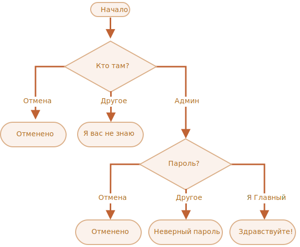

Проверка логина
Напишите код, который будет спрашивать логин с помощью prompt.
Если посетитель вводит «Админ», то prompt запрашивает пароль, если ничего не введено
или
нажата клавиша Esc – показать «Отменено», в противном случае отобразить «Я вас не знаю».
Пароль проверять так:
- Если введён пароль «Я главный», то выводить «Здравствуйте!»,
- Иначе – «Неверный пароль»,
- При отмене – «Отменено».
Блок-схема:
Для решения используйте вложенные блоки if. Обращайте внимание на стиль и читаемость
кода.
Подсказка: передача пустого ввода в приглашение prompt возвращает пустую строку
''. Нажатие клавиши Esc во время запроса возвращает null.
решение
let userName = prompt("Кто там?", '');
if (userName === 'Админ') {
let pass = prompt('Пароль?', '');
if (pass === 'Я главный') {
alert( 'Здравствуйте!' );
} else if (pass === '' || pass === null) {
alert( 'Отменено' );
} else {
alert( 'Неверный пароль' );
}
} else if (userName === '' || userName === null) {
alert( 'Отменено' );
} else {
alert( "Я вас не знаю" );
}Обратите внимание на вертикальные отступы внутри блоков if. Они технически не
требуются, но делают код более читаемым.